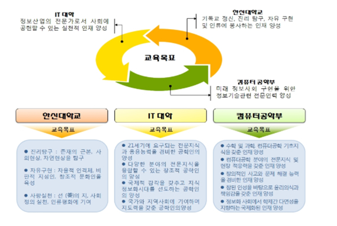

4 차산업혁명 시대 SW 중심사회에서 컴퓨팅 기술 및 SW 기술과 관련된 다양한 분야들을 연구하는 학부입니다 . 컴퓨터공학부는 컴퓨팅 기술과 함께 사물인터넷 (IoT), 클라우드 (Cloud), 빅데이터 (BigData), 모바일 (Mobile), 인공지능 (AI) 을 아우르는 ICBMA 분야 이론에 대한 심층적 이해와 효과적인 실험 , 실습 교육을 통해 SW 중심사회의 핵심 역할을 담당할 인재를 양성하고 컴퓨터공학 분야의 전문지식 및 현장 적응 능력 배양 , 창의적인 사고와 문제 해결 능력 배양 , 참된 인성을 바탕으로 윤리의식과 책임감 함양 , 학제간 다면성 지향을 교육목표로 합니다 .
컴퓨터공학부는 한신대학교의 교육목표를 실현함과 동시에 컴퓨팅 기술 및 SW 융합 기술 분야 이론에 대한 심층적 이해와 효과적인 실험, 실습 훈련을 통해 SW 중심사회의 핵심 역할을 담당할 인력 양성을 위해 다음과 같은 교육목표를 설정하였습니다.
컴퓨터공학 분야의 전문지식 및 현장 적응력과 창의적인 사고를 통한 문제 해결 능력을 겸비하고 참된 인성을 바탕으로 윤리의식과 책임감을 갖춘 SW 중심사회에서 학제간 다면성을 지향하는 융합형 인재
